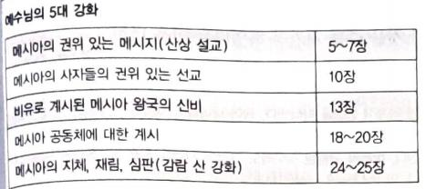

1예수께서 무리를 보시고 산에 올라가 앉으시니 제자들이 나아온지라
2입을 열어 가르쳐 이르시되
3심령이 가난한 자는 복이 있나니 천국이 그들의 것임이요
4애통하는 자는 복이 있나니 그들이 위로를 받을 것임이요
5온유한 자는 복이 있나니 그들이 땅을 기업으로 받을 것임이요
6의에 주리고 목마른 자는 복이 있나니 그들이 배부를 것임이요
7긍휼히 여기는 자는 복이 있나니 그들이 긍휼히 여김을 받을 것임이요
8마음이 청결한 자는 복이 있나니 그들이 하나님을 볼 것임이요
9화평하게 하는 자는 복이 있나니 그들이 하나님의 아들이라 일컬음을 받을 것임이요
10의를 위하여 박해를 받은 자는 복이 있나니 천국이 그들의 것임이라
11나로 말미암아 너희를 욕하고 박해하고 거짓으로 너희를 거슬러 모든 악한 말을 할 때에는 너희에게 복이 있나니
12기뻐하고 즐거워하라 하늘에서 너희의 상이 큼이라 너희 전에 있던 선지자들도 이같이 박해하였느니라
13너희는 세상의 소금이니 소금이 만일 그 맛을 잃으면 무엇으로 짜게 하리요 후에는 아무 쓸 데 없어 다만 밖에 버려져 사람에게 밟힐 뿐이니라
14너희는 세상의 빛이라 산 위에 있는 동네가 숨겨지지 못할 것이요
15사람이 등불을 켜서 말 아래에 두지 아니하고 등경 위에 두나니 이러므로 집 안 모든 사람에게 비치느니라
16이같이 너희 빛이 사람 앞에 비치게 하여 그들로 너희 착한 행실을 보고 하늘에 계신 너희 아버지께 영광을 돌리게 하라
17내가 율법이나 선지자를 폐하러 온 줄로 생각하지 말라 폐하러 온 것이 아니요 완전하게 하려 함이라
18진실로 너희에게 이르노니 천지가 없어지기 전에는 율법의 일점 일획도 결코 없어지지 아니하고 다 이루리라
19그러므로 누구든지 이 계명 중의 지극히 작은 것 하나라도 버리고 또 그같이 사람을 가르치는 자는 천국에서 지극히 작다 일컬음을 받을 것이요 누구든지 이를 행하며 가르치는 자는 천국에서 크다 일컬음을 받으리라
20내가 너희에게 이르노니 너희 의가 서기관과 바리새인보다 더 낫지 못하면 결코 천국에 들어가지 못하리라
21옛 사람에게 말한 바 살인하지 말라 누구든지 살인하면 심판을 받게 되리라 하였다는 것을 너희가 들었으나
22나는 너희에게 이르노니 형제에게 노하는 자마다 심판을 받게 되고 형제를 대하여 라가라 하는 자는 공회에 잡혀가게 되고 미련한 놈이라 하는 자는 지옥 불에 들어가게 되리라
이유없이 노하는 자, 라가=바보, 얼간이(아람어), 추측: 산헤드린 공회,
23그러므로 예물을 제단에 드리려다가 거기서 네 형제에게 원망들을 만한 일이 있는 것이 생각나거든
24예물을 제단 앞에 두고 먼저 가서 형제와 화목하고 그 후에 와서 예물을 드리라
25너를 고발하는 자와 함께 길에 있을 때에 급히 사화하라 그 고발하는 자가 너를 재판관에게 내어 주고 재판관이 옥리에게 내어 주어 옥에 가둘까 염려하라
26진실로 네게 이르노니 네가 한 푼이라도 남김이 없이 다 갚기 전에는 결코 거기서 나오지 못하리라
27또 간음하지 말라 하였다는 것을 너희가 들었으나
28나는 너희에게 이르노니 음욕을 품고 여자를 보는 자마다 마음에 이미 간음하였느니라
29만일 네 오른 눈이 너로 실족하게 하거든 빼어 내버리라 네 백체 중 하나가 없어지고 온 몸이 지옥에 던져지지 않는 것이 유익하며
30또한 만일 네 오른손이 너로 실족하게 하거든 찍어 내버리라 네 백체 중 하나가 없어지고 온 몸이 지옥에 던져지지 않는 것이 유익하니라
31또 일렀으되 누구든지 아내를 버리려거든 이혼 증서를 줄 것이라 하였으나
32나는 너희에게 이르노니 누구든지 음행한 이유 없이 아내를 버리면 이는 그로 간음하게 함이요 또 누구든지 버림받은 여자에게 장가드는 자도 간음함이니라
33또 옛 사람에게 말한 바 헛 맹세를 하지 말고 네 맹세한 것을 주께 지키라 하였다는 것을 너희가 들었으나
34나는 너희에게 이르노니 도무지 맹세하지 말지니 하늘로도 하지 말라 이는 하나님의 보좌임이요
35땅으로도 하지 말라 이는 하나님의 발등상임이요 예루살렘으로도 하지 말라 이는 큰 임금의 성임이요
36네 머리로도 하지 말라 이는 네가 한 터럭도 희고 검게 할 수 없음이라
37오직 너희 말은 옳다 옳다, 아니라 아니라 하라 이에서 지나는 것은 악으로부터 나느니라
38또 눈은 눈으로, 이는 이로 갚으라 하였다는 것을 너희가 들었으나
39나는 너희에게 이르노니 악한 자를 대적하지 말라 누구든지 네 오른편 뺨을 치거든 왼편도 돌려 대며
40또 너를 고발하여 속옷을 가지고자 하는 자에게 겉옷까지도 가지게 하며
41또 누구든지 너로 억지로 오 리를 가게 하거든 그 사람과 십 리를 동행하고
42네게 구하는 자에게 주며 네게 꾸고자 하는 자에게 거절하지 말라
43또 네 이웃을 사랑하고 네 원수를 미워하라 하였다는 것을 너희가 들었으나
44나는 너희에게 이르노니 너희 원수를 사랑하며 너희를 박해하는 자를 위하여 기도하라
45이같이 한즉 하늘에 계신 너희 아버지의 아들이 되리니 이는 하나님이 그 해를 악인과 선인에게 비추시며 비를 의로운 자와 불의한 자에게 내려주심이라
46너희가 너희를 사랑하는 자를 사랑하면 무슨 상이 있으리요 세리도 이같이 아니하느냐
47또 너희가 너희 형제에게만 문안하면 남보다 더하는 것이 무엇이냐 이방인들도 이같이 아니하느냐
48그러므로 하늘에 계신 너희 아버지의 온전하심과 같이 너희도 온전하라
